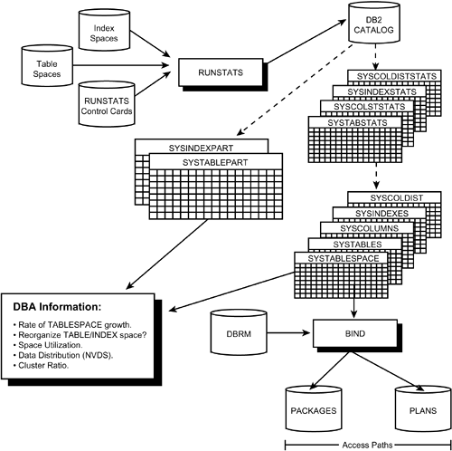

|
|
< Day Day Up > |
|
The RUNSTATS UtilityThe RUNSTATS utility collects statistical information for DB2 tables, table spaces, partitions, indexes, and columns. It can place this information into DB2 Catalog tables or simply produce a report of the statistical information. The statistics in these tables are used for two primary reasons: to provide organizational information for DBAs and to be used as input to the DB2 optimizer during the BIND process to determine optimal access paths for SQL queries. The statistical information can also be queried using SQL. Several sample DB2 Catalog queries were presented in Chapter 26, "DB2 Object Monitoring Using the DB2 Catalog and RTS." The diagram in Figure 34.1 details the functionality of the RUNSTATS utility. Figure 34.1. The RUNSTATS utility.You can use the RUNSTATS utility to
This flexibility can be useful when you want to determine the effect of RUNSTATS on specific SQL queries—without updating the current useable statistics. Also, if the statistics used by the DB2 optimizer have been modified, RUNSTATS can still be run to gather the DBA monitoring statistics. Consult Tables 34.1 and 34.2 for a breakdown of the types of statistics gathered by RUNSTATS. The information in this table is accurate as of DB2 V8.
The Two Options for Running RUNSTATSThere are two options for running RUNSTATS: You can collect statistics either at the table space level or at the index level. Additionally, you can execute RUNSTATS at the partition level for both table spaces and indexes (including data-partitioned secondary indexes). NOTE When RUNSTATS are collects on a single partition, the partition-level statistics are used to update the aggregate statistics for the entire object. When collecting statistics at the table space level, you can optionally specify tables, indexes, and specific columns. Listing 34.4 shows RUNSTATS JCL executing the RUNSTATS utility twice: once for the DSN8810.DEPT table space and all its indexes and a second time for the DSN8810.EMP table and several of its columns. Listing 34.4. RUNSTATS TABLESPACE JCL
//DB2JOBU JOB (UTILITY),'DB2 RUNSTATS',MSGCLASS=X,CLASS=X,
// NOTIFY=USER
//*
//****************************************************************
//*
//* DB2 RUNSTATS TABLESPACE UTILITY
//*
//****************************************************************
//*
//UTIL EXEC DSNUPROC,SYSTEM=DSN,UID='STATSTS',UTPROC="
//*
//* UTILITY INPUT CONTROL STATEMENTS
//* 1. The first statement accumulates statistics for the
//* given table space based on the named index columns.
//* 2. The second statement accumulates statistics only for
//* the named table and columns in the named table space.
//*
//DSNUPROC.SYSIN DD *
RUNSTATS TABLESPACE DSN8D81A.DSN8S81D
INDEX (ALL) SHRLEVEL REFERENCE
RUNSTATS TABLESPACE DSN8D81A.DSN8S81E
TABLE (DSN8810.EMO)
COLUMN (FIRSTNME,MIDINIT,LASTNAME,SALARY,BONUS,COMM)
SHRLEVEL REFERENCE
/*
//
The other form of RUNSTATS operates at the index level. Listing 34.5 offers sample JCL to execute RUNSTATS for a specific DB2 index. Listing 34.5. RUNSTATS INDEX JCL
//DB2JOBU JOB (UTILITY),'DB2 RUNS IX',MSGCLASS=X,CLASS=X,
// NOTIFY=USER
//*
//****************************************************************
//*
//* DB2 RUNSTATS INDEX UTILITY
//*
//****************************************************************
//*
//UTIL EXEC DSNUPROC,SYSTEM=DSN,UID='STATSIX',UTPROC="
//*
//* UTILITY INPUT CONTROL STATEMENTS
//* The RUNSTATS statement accumulates statistics for the
//* given index.
//*
//DSNUPROC.SYSIN DD *
RUNSTATS INDEX (DSN8810.XEMPPROJACT2)
/*
//
RUNSTATS PhasesThe RUNSTATS utility has three phases:
RUNSTATS Locking ConsiderationsThe RUNSTATS utility, regardless of whether it is being run to collect TABLESPACE statistics or INDEX statistics, can operate concurrently with the following utilities:
Furthermore, RUNSTATS TABLESPACE can operate concurrently with RECOVER INDEX, REBUILD INDEX, REORG INDEX, and REPAIR LOCATE INDEX PAGE REPLACE. RUNSTATS INDEX can be run concurrently with the following:
When the RUNSTATS utility is executed with the SHRLEVEL REFERENCE option, it drains write claim classes to the table space, table space partition, index, or index partition. If SHRLEVEL CHANGE is specified, the RUNSTATS utility will claim the read claim class for the object being operated upon; however, no locking occurs if the object is a type 2 index. DB2 Catalog Tables Updated by RUNSTATSThe actual DB2 Catalog tables and statistics that get updated by RUNSTATS vary depending on the RUNSTATS options specified, primarily the UPDATE option. There are three options that can be specified on the UPDATE parameter:
Now, if you execute RUNSTATS TABLESPACE using the UPDATE ALL option, the following DB2 Catalog tables are updated:
However, if RUNSTATS TABLESPACE is run with the UPDATE ACCESSPATH option, onlySYSTABLESPACE, SYSTABLES, and SYSTABSTATS are updated. If RUNSTATS TABLESPACE is run specifying UPDATE SPACE, then SYSTABSTATS, SYSTABLEPART, SYSTABLES, and SYSLOBSTATS are updated. For RUNSTATS TABLE using either the UPDATE ALL or UPDATE ACCESSPATH option, SYSCOLUMNS and SYSCOLSTATS are updated. When executing RUNSTATS INDEX using the UPDATE ACCESSPATH option, the following DB2 Catalog tables are updated:
RUNSTATS INDEX specifying UPDATE SPACE modifies the SYSINDEXPART and SYSINDEXES DB2 Catalog tables. When specifying UPDATE ALL, all seven of these DB2 Catalog tables are updated. RUNSTATS GuidelinesUse the following tips and techniques to implement effective RUNSTATS jobs at your shop. Execute RUNSTATS During Off-Peak HoursRUNSTATS can cause DB2 Catalog contention problems for a DB2 subsystem because it can update the following DB2 Catalog tables:
Whenever possible, execute RUNSTATS during an off-peak period to avoid performance degradation. Execute RUNSTATS Multiple Times for Long Column ListsA limit of 10 columns can be specified per RUNSTATS execution. If you must gather statistics on more than 10 columns, issue multiple executions of the RUNSTATS utility, specifying as many as 10 columns per run. Of course, if you specify TABLE ALL (which is the default), information will be gathered for all columns of all tables in the table space. The above guidance to run RUNSTATS multiple times should be applied only if you are gathering statistics for more than 10 columns, but fewer than all of the columns. Be Aware of DB2's Notion of ClusteringAlthough the calculation of CLUSTER RATIO has not been published by IBM, DB2 does not weigh duplicate values the same as unique values. For example, consider a table with a SMALLINT column that contains the following values in the physical sequence indicated:
This would seem to be 99% clustered because 6 is the only value out of sequence. This is not the case, however, because of the complex algorithm DB2 uses for factoring duplicates into the CLUSTER RATIO. Execute RUNSTATS After Significant Data ChangesRun the RUNSTATS utility liberally. The cost of RUNSTATS usually is negligible for small- to medium-size table spaces. Moreover, the payback in optimized dynamic SQL, and static SQL when plans are re-bound using valid statistics, can be significant. Running RUNSTATS can take longer on larger table spaces, so plan wisely before executing RUNSTATS for very large table spaces and indexes. However, you cannot avoid running RUNSTATS for larger objects because DB2 requires the statistics for formulating efficient access paths, perhaps even more so for larger objects. Always schedule the running of the RUNSTATS utility for dynamic production data. This gives DB2 the most accurate volume data on which to base its access path selections. Discuss the frequency of production RUNSTATS jobs with your database administration unit. For volatile tables, be sure to execute the RUNSTATS utility at least monthly. CAUTION Be aware that RUNSTATS changes your statistics, which can change your DB2 access paths. If you are satisfied with the performance of your production, static SQL, you should use caution when rebinding those packages and plans against changed statistics. Favor Using SHRLEVEL REFERENCETo ensure the accuracy of the statistics gathered by RUNSTATS, favor the use of the SHRLEVEL REFERENCE option. For table spaces that must be online 24 hours a day, however, execute RUNSTATS with the SHRLEVEL CHANGE option during off-peak processing periods. Use Good Judgment When Scheduling RUNSTATSAlthough it may seem best to execute RUNSTATS to record each and every modification to DB2 table data, it is probably overkill. Not every data modification will affect performance. Deciding which will and which won't, however, is an arduous task requiring good judgment. Before running RUNSTATS, analyze the type of data in the table space, the scope of the change, and the number of changes. The overhead of running the RUNSTATS utility and the data availability needs of the application could make it impossible to run the utility as frequently as you want. It is good practice to execute RUNSTATS in the following situations:
Do Not Avoid RUNSTATS Even When Changing Statistics Using SQLThe DB2 optimizer is not perfect. Sometimes, DBAs alter the RUNSTATS information stored in the DB2 Catalog. This should be done only as a last resort. Also, do not forgo the execution of RUNSTATS after modifying the DB2 Catalog statistics. At the least, RUNSTATS should be run to report on the current statistics, without updating the DB2 Catalog. However, this will make all the DB2 Catalog statistics for the table space outdated, not just the ones that need to be static. Therefore, consider running RUNSTATS to update the DB2 Catalog, regardless of whether the statistics have been modified, but follow the RUNSTATS job with a SQL UPDATE, INSERT, or DELETE statement to make the changes. Consider Collecting Partition-Level StatisticsRUNSTATS can be executed by partition, thereby collecting statistics for a table space a partition at a time. Employ this technique to collect statistics (over time) while increasing data availability. Additionally, consider collecting RUNSTATS more frequently for volatile partitions, and less frequently for other partitions. Consider SamplingThe SAMPLE parameter enables the RUNSTATS utility to use sampling methods to collect statistics instead of scanning every row in the table space, tables, and indexes specified. When sampling is specified, the overall resource consumption, CPU time, and elapsed time required by RUNSTATS can be substantially reduced. However, the accuracy of the collected statistics is impacted because only a subset of the rows are read to estimate statistics such as cardinality, high key value, and low key value. In general, consider sampling only when RUNSTATS takes too much time to execute within the structure of your environment. Additionally, specify as high a sampling percentage as possible because the more data that is sampled, the more accurate the statistics are. For example
RUNSTATS TABLESPACE DSN8D51A.DSN8S51D
TABLE (ALL) SAMPLE 50
This statement causes RUNSTATS to use a sampling rate of 50% for the specified table space and tables. Consider Collecting Frequent Value StatisticsThe KEYCARD and FREQVAL parameters can be used with RUNSTATS to gather frequent value statistics. DB2 typically views any two columns as independent from one another. However, frequent value statistics enable DB2 to capture information about correlated columns. Columns are considered to be correlated with one another when their values are related in some manner. Consider, for example, CITY and STATE columns. If the CITY column is set to CHICAGO it is much more common for the STATE to be set to IL than any other state. However, without frequent value statistics, DB2 would consider Chicago, FL to be just as common as Chicago, IL. With a multi-column index for CITY and STATE, the RUNSTATS utility can be used to collect frequent value statistics to learn about the correlation between the two columns. For example, consider the following RUNSTATS specification for DSN8810.XEMPPROJACT1 (a unique index on PROJNO, ACTNO, EMSTDATE, and EMPNO):
RUNSTATS INDEX DSN8810.XEMPPROJACT1
KEYCARD
FREQVAL NUMCOLS 2 COUNT 15
This statement causes the cardinality values to be collected for the concatenation of the first and second columns of the index (in this case, PROJNO and ACTNO). The top 15 most frequently occurring values will be collected. These statistics are most useful for queries against columns which are actually correlated in some manner where a matching index scan is used for the columns indicated. NOTE The default for NUMCOLS is 1 and the default for COUNT is 15. This means that RUNSTATS will collect the 15 most frequent values for the first key column of the index. Also, please note that the value for NUMCOLS cannot be larger than the number of columns in the index. If you specify a number greater than the number of indexed columns, RUNSTATS will simply use the number of columns in the index. Consider Collecting Column and Column Group StatisticsYou can use the COLUMN keyword of RUNSTATS to collect statistics for non-leading index columns or columns not indexed at all. But sometimes it is necessary to collect statistics for columns as a set, instead of individually. This is accomplished using the COLGROUP keyword. NOTE For versions of DB2 prior to V8 IBM provided DSTATS, a separate utility program for accumulating column statistics. For those readers not yet using DB2 V8, DSTATS can be downloaded free-of-charge at the following link: ftp://www.redbooks.ibm.com/redbooks/dstats/ Be aware, though, that DSTATS does not update the DB2 Catalog. It creates a user work table of data similar to SYSIBM.SYSCOLDIST. A user with SYSADM authority must insert these entries manually into the DB2 Catalog. Collecting column and column group statistics can greatly improve DB2's ability to correctly formulate access paths—and therefore, improve query performance. This is particularly so for tables accessed frequently in an ad hoc manner. If the application is planned, it is relatively easy to build the correct indexes, and then to capture statistics on those indexes using RUNSTATS. But for ad hoc queries, just about any column can appear in a query predicate. Therefore, consider capturing statistics on non-indexed columns to improve performance. To collect distribution statistics for non-indexed or non-leading indexed columns, specify the COLGROUP keyword. Simply specify the list of grouped columns using the COLGROUP keyword. This causes RUNSTATS to calculate a single cardinality value for the group of columns. You can also collect frequency statistics for the grouped columns by specifying FREQVAL with COLGROUP. When using FREQVAL with COLGROUP, you must also specify COUNT n to tell RUNSTATS how many frequently occurring values should be collected for the specified group of columns. Additionally, you will need to indicate whether the most frequently occurring values or the least frequently occurring values are to be stored for the group of columns. This is accomplished using one of the following parameters:
Consider Collecting Inline StatisticsInstead of executing RUNSTATS after loading tables, reorganizing table spaces and indexes, or rebuilding indexes, consider collecting statistics as those utilities run. You can use the STATISTICS keyword with LOAD, REBUILD INDEX, and REORG, causing catalog statistics to be collected as part of the utility processing. This eliminates the need to execute RUNSTATS after those utilities. CAUTION If you restart a LOAD or REBUILD INDEX utility that uses the STATISTICS keyword, inline statistics collection will not occur. You will need to run RUNSTATS to update the DB2 Catalog statistics after the restarted utility completes. CAUTION You cannot collect column group statistics with the STATISTICS keyword. Instead, you must use RUNSTATS. Consider Accumulating Historical StatisticsAs of DB2 V7, RUNSTATS can be used to accumulate additional statistics in several DB2 Catalog tables reserved for historical statistics. It is a good idea to accumulate these statistics, especially for very volatile objects, to help analyze data growth over time. Historical statistics will be accumulated by RUNSTATS when you specify the HISTORY parameter. The following options are available with the HISTORY parameter:
Of course, RUNSTATS will continue to collect the current statistics regardless of which option is chosen for the HISTORY parameter. But the utility will also record the historical statistics using the follow DB2 Catalog tables:
These historical statistics can be cleaned up using the MODIFY STATISTICS utility, as detailed earlier in this chapter. Consider Collecting Statistics on a List of ObjectsRemember, that as of DB2 V7 you can specify a list of objects to be operated on by IBM utilities. Collecting statistics for a list of objects is accomplished using the LISTDEF statement in conjunction with RUNSTATS. Usage of LISTDEF is covered in Chapter 30, "An Introduction to DB2 Utilities." Use RUNSTATS to Generate DB2 Statistics ReportsYou can use the REPORT YES option, along with the UPDATE NONE option, to use RUNSTATS as a DB2 statistics reporting tool. The REPORT YES option causes RUNSTATS to generate a report of the statistics it collects, and the UPDATE NONE clause signals RUNSTATS to collect the statistics without updating the DB2 Catalog. The reports, however, will contain information about the actual condition of the DB2 objects for which RUNSTATS was run. The reports will not contain the information as it exists in the DB2 Catalog because the statistics were not updated due to the UPDATE NONE keyword. You can use the report to compare the statistics against the statistics in the DB2 Catalog to determine how the data has changed since the last RUNSTATS was executed. Use RUNSTATS to Invalidate Statements in the Dynamic SQL CacheExecuting the RUNSTATS utility will invalidate cached dynamic SQL statements. Any cached dynamic SQL statements that access objects for which RUNSTATS is being run will be invalidated. |
|
|
< Day Day Up > |
|